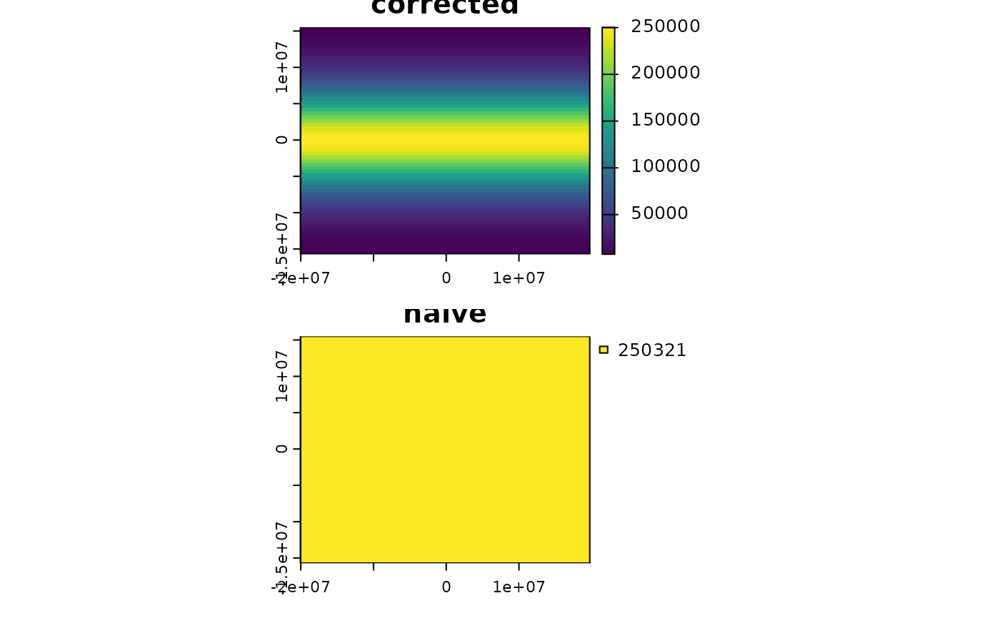

Area covered by each raster cell
cellSize.RdCompute the area covered by individual raster cells.
Computing the surface area of raster cells is especially relevant for longitude/latitude rasters.
But note that for both angular (longitude/latitude) and for planar (projected) coordinate reference systems raster cells sizes are generally not constant, unless you are using an equal-area coordinate reference system.
For planar CRSs, the area is therefore not computed based on the linear units of the coordinate reference system, but on the *actual* area by transforming cells to longitude/latitude. If you do not want that correction, you can use transform=FALSE or init(x, prod(res(x)))
Usage
# S4 method for SpatRaster
cellSize(x, mask=FALSE, lyrs=FALSE, unit="m", transform=TRUE, rcx=100, filename="", ...)Arguments
- x
SpatRaster
- mask
logical. If
TRUE, cells that areNAinxare alsoNAin the output- lyrs
logical. If
TRUEandmask=TRUE, the output has the same number of layers asx. That is only useful if cases where the layers ofxhave different cells that areNA- unit
character. One of "m", "km", or "ha"
- transform
logical. If
TRUE, planar CRS data are transformed to lon/lat for accuracy- rcx
positive integer. The maximum number of rows and columns to be used to compute area of planar data if
transform=TRUE. Ifxhas more rows and/or columns, the raster is aggregated to match this limit, and values for the original cells are estimated by bilinear interpolation (seeresample). This can save a lot of time- filename
character. Output filename
- ...
additional arguments for writing files as in
writeRaster
Examples
# SpatRaster
r <- rast(nrows=18, ncols=36)
v <- 1:ncell(r)
v[200:400] <- NA
values(r) <- v
# size of each raster cell
a <- cellSize(r)
# illustration of distortion
r <- rast(ncols=90, nrows=45, ymin=-80, ymax=80)
m <- project(r, "+proj=merc")
bad <- init(m, prod(res(m)) / 1000000, names="naive")
good <- cellSize(m, unit="km", names="corrected")
plot(c(good, bad), nc=1, mar=c(2,2,1,6))
